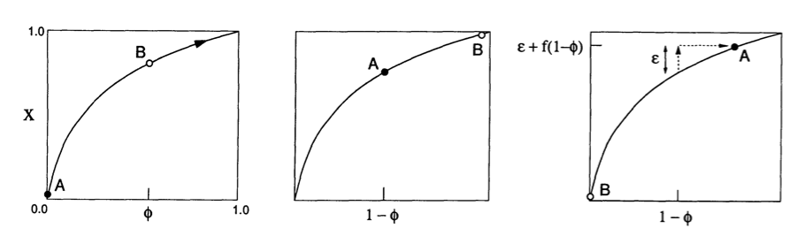
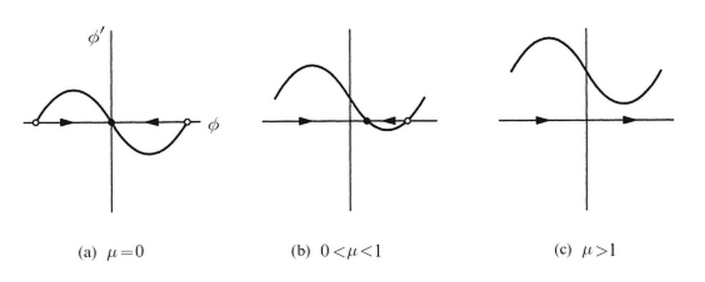
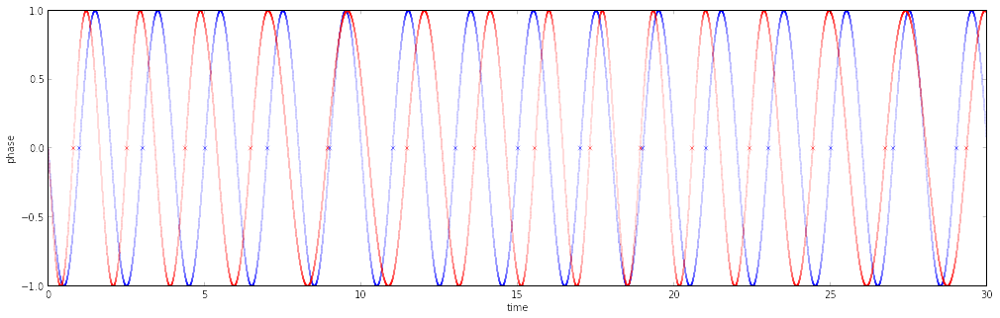
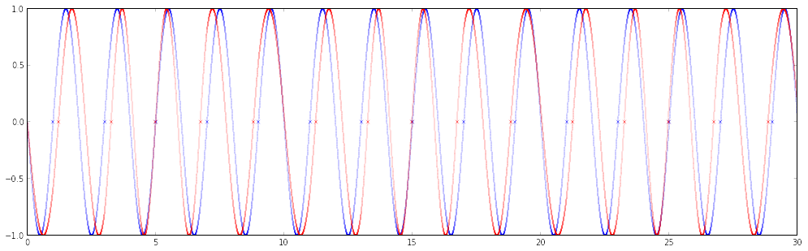
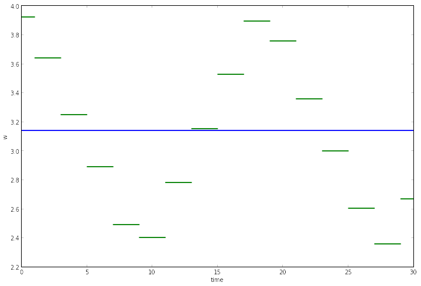
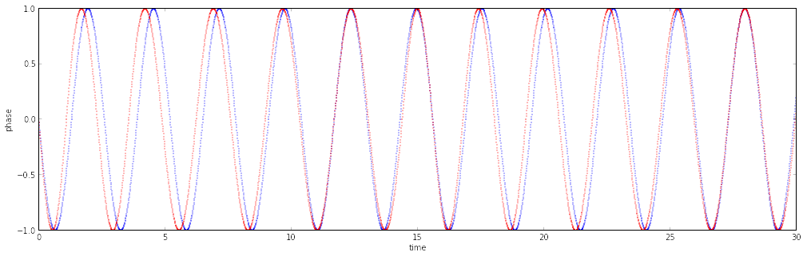

Firefly Synchronization
Modeling and Building Pulse-Coupled Oscillators
Mike Skirpan
Pulse-Coupled Oscillator
Coupled oscillators that have a limited window of information passing
Goal of this project:
Model the dynamics of firefly synchronization and build an interactive installation
Modeling Pulse-coupling
- Integrate-and-Fire Oscillation
- Phase-Reset Adaptation
- Phase-Lock Adaptation
Integrate-and-Fire Oscillators
- Smooth, monotonic increasing, concave down
- Unique fixed point for Return Map - R, which is a repeller
- Peskin's Model is a popular approach (below)
- When B fires, A's state updates as $min(1, \epsilon + f(1 - \phi))$

Mirollo, Renato E., and Steven H. Strogatz. "Synchronization of pulse-coupled biological oscillators." (1990)
State
$x = f(\phi) = C(1 - e^{-\gamma\phi})$
$g(x) = \gamma^{-1} ln( {C\over C-x} )$
Firing and Return Map
$h(\phi) = g( \epsilon + f(1 - \phi))$
$R(\phi) = h(h(\phi))$
Keep in mind the fixed point repeller for R
Phase Reset Adaptation
- Each Firefly has a phase "reset strength" - A - which is its ability to instaneously change frequency
- $\dot{\theta} = \omega + Asin(\phi)$
- We determine the entrainment region with a dimensionless group $\mu$

Strogatz, Steven H. "Nonlinear dynamics and chaos: with applications to physics, biology, chemistry, and engineering."
Small A (top) vs. Big A (bottom)


Argh! Machine Epsilon means we always miss the fixed point

But this also has to do with my coding model - but that's coming..
Phase-Lock Adaptation
- Uses a Phase Response Curve and a decay to adapt frequency
- $\omega_{n+1} = \omega_n + \epsilon(\omega_{nat} - \omega_n) + g^+(\phi)(\omega_{min} - \omega_n) + g^-(\phi)(\omega_{max} - \omega_n)$
- $g^+(\phi) = max({1\over{2\pi}} sin(2\pi\phi), 0)$
- $g^-(\phi) = - min({1\over{2\pi}} sin(2\pi\phi), 0)$
Max and Min functions give locking regardless of machine epsilons

What does the adaptation actually look like?
Back to my installation goal:
How do I represent a large system of these and then present these in a beautiful way (ie, fast updates and interesting visuals)?
Is there any utility in exploiting the phase drift around the repeller?
What would create an interesting interactive experience?
Coding insight:
Complex agent model (means I'm not doing adaptive RK4 so there's more noise as hinted to before)
Tip of the hat to Niklas Fejes for the suggestion
Installation Insight:
May not want all FF's to entrain (prettier)
If so, want it to take some time so it's not just flashing in your face
Making this an installation
- Raspberry Pi sending PWM to 400 addressable RGB LEDs
- External Power Supply to prevent signal loss
- Can interact by pressing a button twice and setting a beat
Time for a Live Demo
Oh and please come to the ATLAS Expo on 4/29 @ 5-630 PM to check it out